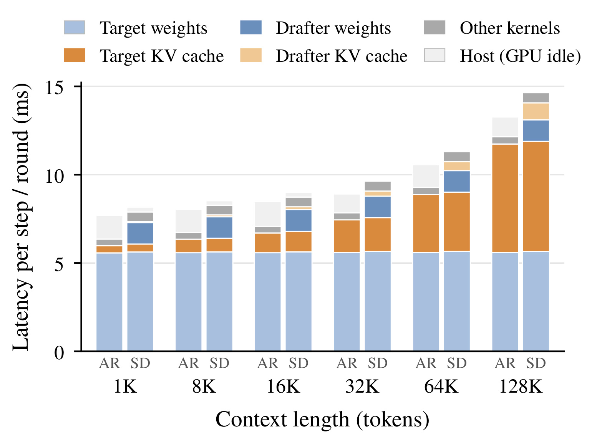
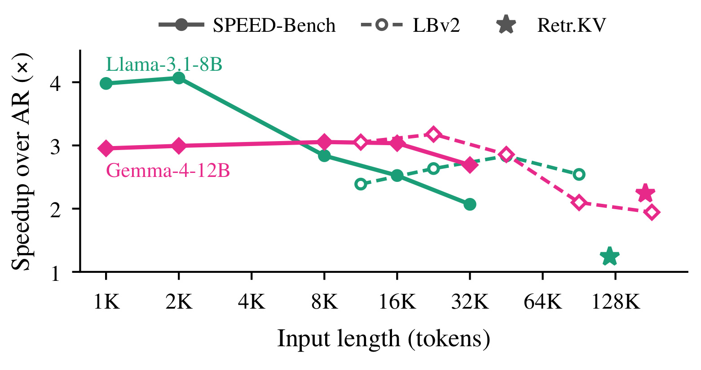
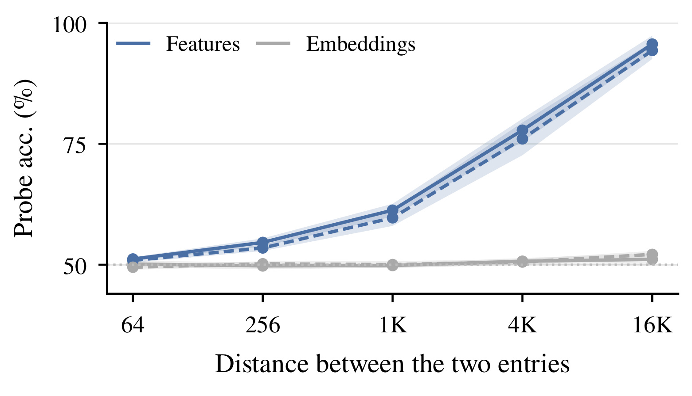
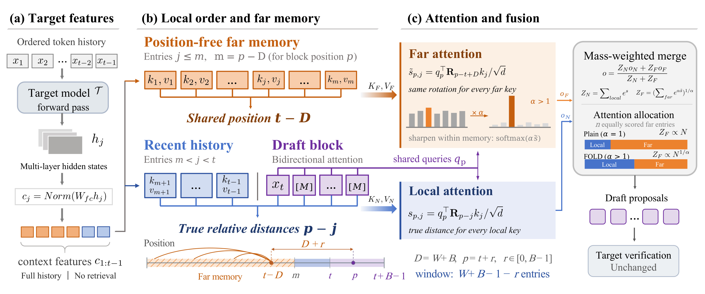
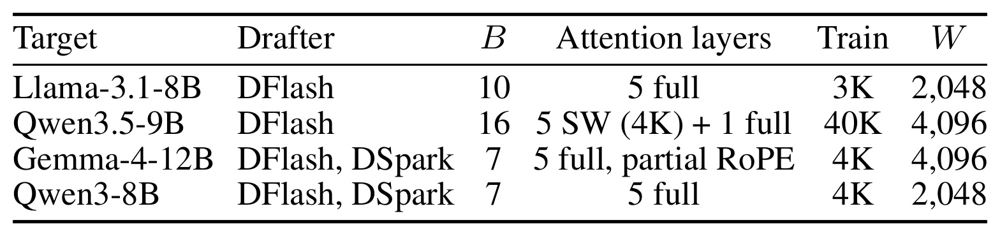
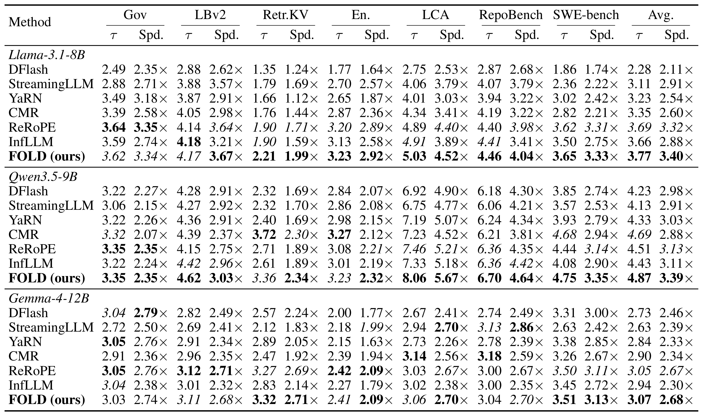
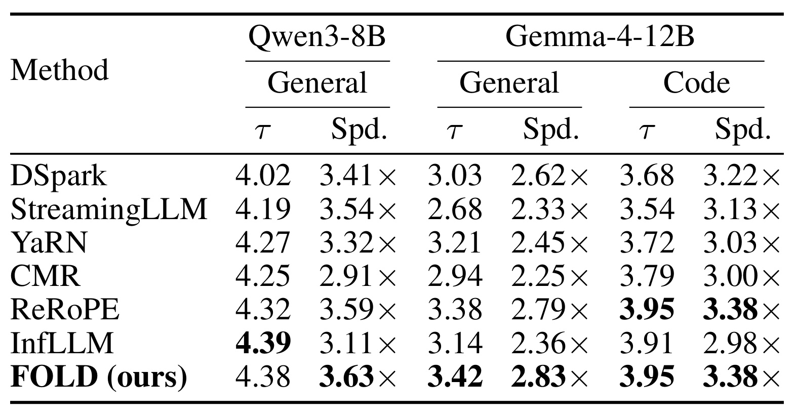
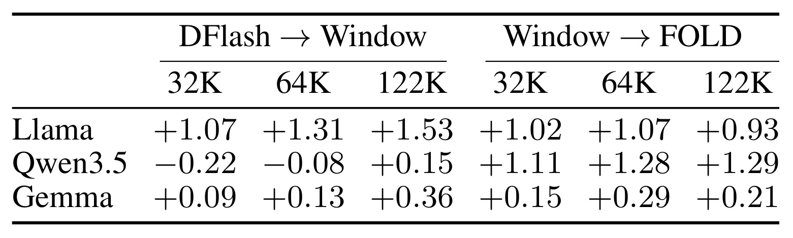
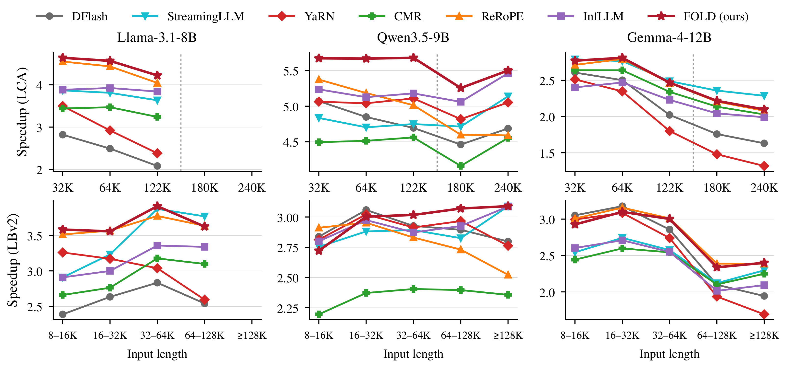
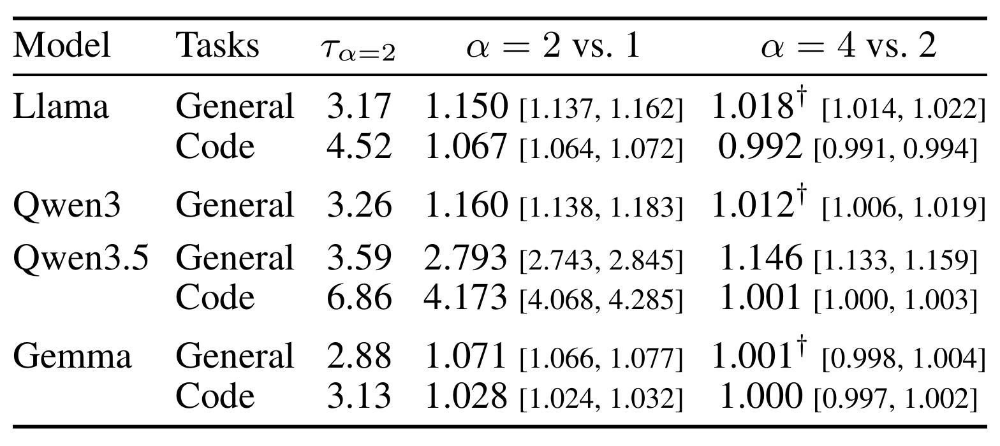

FOLD：保留局部顺序，用无精确位置的远端记忆修复长上下文草稿
FOLD 的英文题目是 FOLD: Position-Free Far Memory with Local Order for Long-Context Speculative Decoding，可译为“面向长上下文投机解码、保留局部顺序的位置自由远端记忆”。作者为 Shuxuan Li、Jialiang Kang、Yanghao Zhou、Ziye Zhu、Xiao Yang，一作来自中山大学与 Canva Research，合作机构包括北京大学。论文于 2026 年 10 月 14 日公开，本文依据 arXiv 论文入口 的首版全文精读；官方代码仓库 本轮已核验可访问，本轮没有运行作者实验。
投机解码原本能通过一次目标模型验证摊薄长上下文的缓存读取成本，但多数轻量草稿器只在短序列上训练，输入变长后接受率显著下降；重新进行长上下文训练又需要额外数据和计算。既要避免超出训练范围的远端相对位置破坏草稿，又要保留远处信息，现有截窗、位置缩放和检索方案各有代价。
1. 背景和问题
1.1 长上下文真正昂贵的部分
投机解码把生成拆成两个角色：便宜的草稿器先提出多个候选 token，昂贵的目标模型再并行验证，提交最长接受前缀及目标采样出的一个 token。草稿能否加速取决于每轮接受多少，而不只是草稿网络本身小不小。长输入使目标模型每步需要读取的键值缓存越来越大，如果一次验证能带走更多输出 token，同一轮读取的成本就能分摊到更多 token。这是本文选择长上下文投机解码的系统动机，并不意味着所有长上下文计算都自动受益。

图中横轴是从一千到十二万八千 token 的上下文长度，每个长度分别画出自回归一步和投机解码一轮，纵轴是毫秒延迟。蓝色区域代表模型权重计算，橙色代表键值缓存注意力，灰色包括其他算子和主机等待。这个比较是在单张 H100、批量大小为一、目标模型为 Llama-3.1-8B、草稿采用块大小十的 DFlash 配置下完成的；一轮与一步提交的 token 数不同，因此柱高本身不能直接当作速度优劣。值得读出的事实是，目标缓存注意力占自回归步骤的比例从约百分之五增长到百分之四十六，而草稿缓存注意力在投机一轮中仍低于百分之七。它说明优化方向可以是多接受几个草稿 token，而不必首先砍掉草稿历史。这个占比只为该模型与负载提供证据，不能推断其他批量、显卡和并发下比例也相同；它更不证明保留全部缓存没有显存代价。还要注意灰色主机等待并未随注意力优化自动消失，只有提交更多有效输出，才能真正摊薄这些每轮固定开销；减少某一颜色柱子的高度本身不足以保证最终加速。
1.2 草稿短训练与长推理之间的错位
本文针对的是读目标隐藏状态的块并行草稿器。以 Llama 草稿为例，训练长度约三千 token，而推理输入可超过十万。草稿虽然拿到的是目标已经上下文化的特征，自己的旋转位置编码仍然会接收远超训练区间的相对距离。远处信息因此同时具备两种属性：内容可能已经可用，但显式位置关系不在草稿熟悉的范围。把整个历史删除虽然避开位置外推，却也删除了可能决定下一个 token 的远处定义、事实和代码依赖。

图中纵轴是相对目标自回归解码的加速倍数，横轴是输入 token 长度。绿色是 Llama-3.1-8B，粉色是 Gemma-4-12B，实线、虚线和星形点来自不同基准，而不是把全部点当作同一数据集连续采样。Llama 在 SPEED-Bench 上从短输入接近四倍下降到三万二千 token 时约两倍；Gemma 在长文任务上也出现明显退化，论文给出的 LongBench v2 对照是从三点一八倍降到超过十二万八千输入时的一点九四倍。这里证明的是“原始草稿器的加速优势会随长度衰减”，还没有单独识别内容变难、目标特征变化与显式位置外推各自贡献。星形检索点尤其提示，任务类型会改变草稿难度，长度相近并不保证速度相近。作者随后做位置干预和特征探针，正是为了从这种混杂趋势走向更具体的机制假设，而不是仅凭一条下降曲线就决定截断窗口。
已有方法分别处理不同冲突。StreamingLLM 保留注意力汇点与近期窗口，计算简单但舍弃多数远端内容；YaRN 重新缩放位置，保留信息但连局部熟悉的位置结构也可能改变；ReRoPE 保留局部距离并限制远处距离，与本文的位置处理较近；InfLLM、SpecExtend 的跨模型检索从远端选择块，可以减少读取，却要支付打分、选择和定期刷新成本。FOLD 的主张建立在一个具体成本判断上：对于足够轻的草稿，直接读完历史有时比选择哪些历史值得读更便宜。它没有宣称全历史读取在任意系统中总是更好。
1.3 为什么远端可以弱化位置而近期不行
作者首先保持内容及块内距离不变，仅把草稿块相对已提交历史整体平移八千至十二万八千位置。在两千 token 输入上，Llama 的接受草稿比例从零点三五一降到至多零点零一四，Gemma 从零点二四一降到至多零点零七六。这比前面的自然长度曲线更接近受控诊断：即便内容相同，远距离本身也足以破坏草稿。另一个问题是，如果移除远端精确位置，目标特征内是否仍有可辨认顺序的信息。

图中横轴是两个历史条目的间隔，纵轴是线性探针判断二者先后顺序的准确率。蓝色来自目标上下文特征差，灰色来自 token 嵌入差；两种线型对应不同文档任务，阴影是五折文档级验证的标准差。在六十四到二百五十六 token 的近距离，特征探针接近随机猜测；间隔达到一万六千以上时则约为百分之九十四到九十六，而嵌入探针始终接近机会水平。作者进一步把历史按六十四 token 块打乱，探针对实际处理顺序仍有约百分之八十四至八十六准确率，对原始顺序则仅约百分之五十二。这排除了只依赖原文主题顺序的部分解释，支持“目标的有序处理写入粗位置线索”。但线性可读不等于草稿已经能无损提取全部位置，也不说明近处词序可删；相反，近距离探针接近随机，为局部保留精确位置提供了互补动机。
因此本文将近期和远端分工：近期支撑语法、风格与连续生成轨迹，需要真实相对顺序；远端更多像按内容访问的事实库，目标特征已有上下文与粗顺序，可以减少显式距离负担。这是一条由诊断支持的设计假设，最后仍要看主结果和消融，不能把探针准确率直接等同于生成正确率。两个诊断分别使用人为距离干预与线性可读性测试，都不是完整任务分数。它们帮助选设计方向，无法代替在真实长文问答或跨文件代码中检查每轮提交与时间成本。
2. 方法
2.1 目标特征驱动的块并行草稿
FOLD 改动草稿注意力的读取规则，目标模型、草稿权重和验证过程保持原样。 当前已提交前缀的最后一个 token 作为块锚点，其后位置放入掩码，草稿一次前向预测后续块。历史并非重新从原始 token 编码：目标模型若干层隐藏状态先拼接再投影，草稿各层从投影结果生成键和值。历史键值的内容因而已经由较强目标模型加工，这与独立小语言模型直接读取原始文本的情形不同。
符号解释：$h_j$ 是目标若干层在历史位置 $j$ 的拼接隐藏状态，$W_{fc}$ 是投影矩阵，$c_j$ 是归一化后的草稿上下文特征；$q_p$ 是块位置 $p$ 的查询，$k_j$ 是由该特征得到的键，$R_{p-j}$ 是相对距离对应的旋转，$d$ 是注意力头维度，$s_{p,j}$ 是旋转后打分。公式揭示错位所在：即使 $c_j$ 内容已经成熟，$R_{p-j}$ 仍可能进入草稿未训练过的距离区间。FOLD 不重新训练投影来修复这种错位，而是在推理时更改远端的距离解释。
草稿块内部采用双向注意力，一般 DFlash 一次提出块大小减一的候选，DeepSpec 草稿的计数约定略有差别。目标随后并行验证并提交接受前缀。论文用平均每轮实际提交 token 数衡量接受长度，因此该量包括目标补出的 token，不能把它机械理解成“候选被接受的比例”。本文也没有额外损失函数或训练目标；所有新增自由度是窗口与浓度参数，属于推理规则。
2.2 远端共享位置与真实本地顺序
令窗口参数为 $W$，块大小为 $B$，定义距离界 $D=W+B$。对块中查询位置 $p$，满足距离小于该界的上下文以及块内位置进入本地集合，其余历史进入远端集合。远端条目全部保留，但都被赋予同一个虚拟位置。 这里的“位置自由”指不再使用各远端条目独有的精确远距离，并非删去目标特征中已经包含的位置线索，也不是将若干历史向量压成一个向量。

框架图左侧显示完整有序前缀先经过目标模型，再把多层隐藏状态投影为草稿特征；这一步发生在目标已有的处理链路内，FOLD 接收其结果。中间把最近历史与草稿块保持原始相对距离，较早历史则全部放到标记为同一虚拟位置的橙色远端分支。橙色格子的数量并没有减少，每个格子依然拥有自己的键和值，图中的共享位置只改变相位计算。右侧蓝色分支读取局部，橙色分支读取远端，后者在内部用浓度参数放大打分差，随后按各自质量合并，再输出草稿并交由不变的目标验证。图右上小柱状示意还区分了普通归一化和本文归一化：当大量远端条目打分相同，普通方式会让数量直接累加，FOLD 则压低总质量随数量增长的速度。这样既让远端内部选择更尖锐，也避免远端凭数量压过局部。整张图的信号方向是目标特征到两条读取分支再到草稿输出，没有一个新增检索器先挑子集，也没有在线训练环节。工程理解时尤其要把远端位置折叠和缓存压缩区分开：图中的长历史依然逐项存在，节省的是选择刷新和外推不适配带来的损失，而不是历史容量。再沿图中间的时间轴看，同一轮块内越靠后的查询，其远端有效距离会随块偏移略增；本地窗口对应的历史条目数量也随查询位置变化。这使块内预测既共享可复用历史，又保留自己在候选块中的位置。图中的双分支不是两个独立生成器，最终只有一组注意力输出进入同一个原始草稿网络，所以没有额外投票、重排或二次生成目标。
符号解释：$t$ 是本轮块起始锚点位置，$r$ 是块内偏移，$F_p$ 是远端集合，$\widetilde s_{p,j}$ 是映射后的远端打分，其余符号沿用前式。远端虚拟位置为 $t-D$，所以距离变成 $D+r$，只随块内偏移变化，与原始输入长度无关。对固定查询所有远端键使用同一旋转，但键的内容不同，所以仍能按内容区分条目。该旋转可等价移到查询上，每个块查询只变换一次，远端键则缓存未旋转版本并跨轮复用。不同块位置的距离略有差异，因此它比简单把所有查询都设成同一个距离更保留块内结构。
当上下文不超过窗口时，远端集合为空，规则退化为原始草稿注意力。这是短输入行为可保持的数学边界；实际执行是否仍有微小调度开销要看实现，不能从等价公式推断所有短输入的实测速度完全相同。混合滑窗和全注意力的草稿也可应用：只改全注意力层，或者让所有层在保留各自原生局部窗口的同时读取远端，本文对 Qwen3.5 的主要设置采用后者。
2.3 分离归一化：同时调节锐度与记忆总权重
共享位置仅解决显式距离外推；历史越长，弱相关远端条目仍可能把注意力稀释。若对本地和远端直接做一个普通 softmax，大量一般相关条目的总量还可能压过近期窗口。因此 FOLD 把“远端内部怎样分配”与“远端相对局部占多少”拆开计算，局部分支保留原本的打分及归一化。
符号解释：$N_p$ 是本地集合，$Z_N$ 是本地指数打分总质量，$v_j$ 是草稿值向量，$o_N$ 是本地加权输出。该式不给本地打分额外乘长度相关温度，所以近期熟悉的分布结构被尽量保留。远端则引入大于等于一的浓度参数，前半为原文公式二，后半为公式三：
符号解释：$\alpha$ 是浓度参数，$o_F$ 是远端内部输出，$Z_F$ 是远端对局部竞争时使用的总质量，$k$ 是远端求和索引。前半式放大打分差使内容读出更集中；后半式以指数打分的相应范数控制总质量，外层开方非常关键。只乘温度而不做这个幂次处理，会混淆分支内部锐度与分支总量。两个分支最后按质量合并：
符号解释：$o_p$ 是查询最终注意力输出，$Z_N$ 与 $Z_F$ 分别决定本地和远端的混合权重。这是原文公式四，不是新增可学习门控。当浓度为一时等价于对位置映射后的全部打分做一次普通 softmax；浓度大于一时只锐化并节制远端，局部分布不变。
符号解释：$\widetilde s_{\max}$ 是远端最高打分，$|F_p|$ 是远端条目数。该界说明相同最高打分下，远端总质量最多按数量的倒浓度次幂放大，默认浓度为二时是平方根增长，而普通归一化可能线性增长。浓度趋于无穷且最大值唯一时，远端输出趋向取最高分单条，并像一个条目与本地竞争；实际默认设置仍然遍历全部历史，并没有执行离散检索。因此这是归一化和注意力分配的变化，不是计算复杂度从线性变为常数。
3. 实验结果
3.1 模型、数据和速度口径

表中列出目标模型、草稿类型、块大小、注意力层构成、训练长度与 FOLD 窗口。Llama-3.1-8B 的五层全注意力草稿训练约三千 token，窗口为二千零四十八；Qwen3.5-9B 的六层草稿中五层是四千窗口滑窗，一层全注意力，训练长约四万，FOLD 窗口四千零九十六。Gemma-4-12B 同时测试 DFlash 和 DSpark，五层全注意力且只对部分维度使用旋转位置，窗口也是四千零九十六；Qwen3-8B 的两种草稿采用二千零四十八窗口。这个架构差异解释了为什么不能仅用训练长度预测收益：层覆盖、位置处理及目标特征本身都会改变接受表现。所有草稿使用已发布权重，未做长上下文微调，浓度统一固定为二。表内六组目标与草稿组合并不是六个目标模型，亦不能把四万训练长度解读为所有层都已在四万距离下做全注意力训练。参数固定的好处是减少逐任务调参的不透明性，局限是尚未探索在线适配窗口和浓度的收益。
评估使用七组主基准：GovReport、LongBench v2、远端键值检索、英语长文本任务聚合，以及仓库代码续写、跨文件补全、SWE-bench 补丁生成。英语聚合又包括摘要、问答、选择与对话任务。输入约一千至二十五万六千 token，超出各目标上下文上限的请求排除。Llama 最长约十二万八千，因而不参与十八万和二十四万代码输入；各模型分词与有效样本数也不完全一致。跨模型比较时应看各自对原始草稿的变化，不能把不同请求集合的绝对倍数当作纯架构优劣。
全部主结果是单张 H100、批量一、贪心解码，速度以同 GPU、同请求的自回归每输出 token 时间除以方法每输出 token 时间，再对请求比值求均值；预填充时间排除。这既不是平均时间的比值，也不是包含排队、预填充与服务开销的端到端收益。表内跨基准平均等权，英语聚合也等权，不能将这些数字重新按请求数混成另一个指标后仍声称是原表平均。
3.2 主表支持平均更稳健，不支持逐格全胜

每个模型分块内，行是原始草稿及各种上下文适配方法，列是任务，每个任务并列接受长度和相对自回归加速。最右是等权平均。Llama 的原始 DFlash 平均接受长度二点二八、加速二点一一倍，FOLD 提升至三点七七、三点四零倍，速度倍数相对提升约百分之六十一。Qwen3.5 从二点九八倍到三点三九倍，约提升百分之十四；Gemma 从二点四六倍到二点六八倍，约提升百分之九。这些是摘要所说跨模型约百分之九至六十一提升的来源，不能把三点四零倍写成对 DFlash 本身快三点四零倍，因为它的分母是目标自回归。
细看主表能发现作者措辞需要限定。Llama 的 GovReport 上 ReRoPE 是三点三五倍，FOLD 三点三四倍；Gemma 的 LongBench v2 是 ReRoPE 二点七一倍、FOLD 二点六八倍。FOLD 的强项是平均及多数任务的稳健性，而不是每个格子都最优。远端检索任务上三组模型的 FOLD 都最快，分别一点九九、二点三四和二点七一倍，这与保留完整远端证据的动机一致。Qwen 的 CMR 在该任务接受长度三点七二，高于 FOLD 三点三六，但速度二点三零倍略低于二点三四倍，说明接受长度并非最终系统目标。选择及刷新开销能让接受更多的方案反而更慢，不能只报接受率就宣布工程胜出。表中加速也不代表目标生成质量提高，目标验证不变主要是保护生成语义分布，本文研究对象是取得同类目标输出时的解码成本。
作者另报告 Llama 的部分通用任务上，FOLD 一轮约十二点三毫秒，原始 DFlash 约十二毫秒，而 InfLLM、CMR 分别约十三点七、十四毫秒。增加全历史分支并没有让每轮最便宜，但它增加每轮接受量，最终每 token 成本更低。这是成本分解与主表相互印证的地方，也说明逐轮延迟和总体吞吐应一起记录。
3.3 跨草稿设计和推理引擎的证据

该表把草稿更换成 DSpark，列中分别报告 Qwen3-8B 通用任务、Gemma 通用任务和代码任务。Qwen 通用任务从原始三点四一倍提高到三点六三倍，Gemma 通用从二点六二到二点八三倍，Gemma 代码从三点二二到三点三八倍。最后一项与 ReRoPE 并列，而不是唯一领先；Qwen 的 InfLLM 接受长度四点三九略高于 FOLD 四点三八，但其速度只有三点一一倍，再次呈现检索开销和接受质量的差异。更换草稿后仍有提升，支持方法不依赖单一 DFlash 权重的判断，却不能推广到任意自回归草稿，因为本文没有测试 EAGLE-3 这类系统。
此表的样本口径也更窄：通用任务只保留至少一万六千 token 输入，Qwen3-8B 只有 Gov 与 LongBench v2；其目标上下文上限为三万二千，未覆盖主表中那些十万级长任务。拿这里的三点六三倍与另一个模型的全任务均值直接比较会改变含义。附录进一步在 SGLang 上验证 Llama，通用任务平均加速从一点五四到二点五零倍，说明收益不完全依赖 vLLM 实现。但附录还记录数值实现下部分请求输出与自回归不同，并分析共同请求集合，因此“目标验证逻辑不变”不应被升级成不同实现的每个 token 都已严格逐位一致。本轮只精读这些报告，没有复跑跨引擎结果。
3.4 截窗修复与远端记忆分别贡献多少

表左半是仅用本地窗口相对原始 DFlash 的接受长度变化，右半是在窗口基础上恢复 FOLD 远端记忆的变化，三列依次对应三万二千、六万四千、十二万二千输入。Llama 的截窗本身带来一点零七至一点五三增量，加入远端再增加约零点九三至一点零七，说明原始长距离确实破坏局部草稿，同时删掉的历史仍有价值。Qwen 则更有辨识度：截窗在前两个长度分别降低零点二二和零点零八，远端分支再提高一点一一和一点二八；到十二万二千，截窗只加零点一五，记忆再加一点二九。由此不能把 FOLD 的作用简化为“窗口变短所以变快”，Qwen 的主要增量来自重新获得历史访问。
Gemma 的远端增量较小，约零点一五到零点二九，与主表整体收益小的现象一致。还有一个对解释很重要的层覆盖混杂：Qwen 的 Window 只限制原来的全注意力层，而 FOLD 让六层都可读取远端，所以右半既含归一化后的远端恢复，也含滑窗层额外远端读取。它是实际系统方案的消融，却不是只改变一个标量的完美控制。附录的 LongBench v2 扩展中，远端记忆在 Qwen3-8B 甚至降低接受长度；读远处信息并非对每个草稿和任务都必然有利。接受长度分解比单看总速度更接近机制，但仍需要以相同层覆盖重做对照，才能细分内容可用性与架构改变各自的因果贡献。
3.5 长度曲线与四点二二倍的准确含义

上排是固定长度的仓库续写，下排是按长度桶聚合的 LongBench v2，每列对应一个目标模型。图中不同颜色是上下文适配方法，纵轴都是对目标自回归的加速。Llama 在仓库续写三万二千时，FOLD 从原始二点八二倍提高到四点六四倍；在十二万二千时，从二点零八倍提高到四点二二倍。这一具体位置就是摘要“加速倍数超过翻倍”的来源：四点二二与二点零八相除约二点零三，分母仍是原始草稿的相对自回归加速倍数。四点二二不是所有模型的平均速度，也不是全文最高绝对加速，更不是包含预填充的服务速度。 例如 Qwen 的同类代码长度区间可保持约五点六七至五点六八倍。
十八万和二十四万点来自另外的超长子集，使用虚线连接，样本选择与前面常规子集不同；Llama 因上下文上限没有这些点。Gemma 的仓库任务中 StreamingLLM 在五个长度的四个上最快，表明对部分模型任务，单纯保留近期窗口仍可能是更便宜的选择。下排较短区间里 Qwen、Gemma 原始 DFlash 退化很轻时，FOLD 没有什么可修复，反而可有小幅变慢。因此长度越长越受益不是普遍定律，任务和目标行为同样决定曲线。即使位置已受限的 StreamingLLM 也会随输入变长而失去接受长度，进一步说明目标特征和预测随上下文变化，位置外推只是部分原因。
3.6 浓度消融验证了归一化不能省

该表第一数值列给出默认浓度二的接受长度，后两列分别是把浓度从一提高到二、从二提高到四时的每请求接受长度比值均值，并给出百分之九十五自助法区间。Qwen3.5 对浓度最敏感：前一个比值通用任务约二点七九三，代码任务约四点一七三，区间都明显高于一。尤其在 LongBench v2，浓度一接受长度只有一点六五，低于原始 DFlash 四点二八；浓度二则达到四点六二。两种设置都在六层读取相同远端条目，故这一对照比前表更直接支持“只映射远端位置还不够，必须控制不断增长的记忆质量”。
但浓度不能无限增大就期待单调改善。由二变四时，Qwen3.5 通用任务仍有约一点一四六倍接受长度比值，而 Llama 代码为零点九九二，Gemma 代码约一点零零零。过度集中可能放弃需要综合多个远端证据的注意力。带匕首符号的行还提醒：逐请求比值的均值与总接受长度之比可能给出不同方向，不能脱离统计定义选一个更好看的数字。浓度同时改变远端内部锐度和总质量，两者尚未完全独立消融；现有结果支持这个组合有效，不能据此确认哪一因素解释了全部提升。窗口和浓度均为手动固定，未知负载下仍需检查模型、任务与参数之间的关系。
3.7 未压缩全历史缓存的真实成本
FOLD 保存额外的未旋转草稿键和值，规模随上下文长度线性增长。论文给出的最高侧缓存约六 GiB，发生在 Qwen3.5 最大上下文、六层均读记忆的配置。它既不删除远端条目，也不把条目汇聚为小型压缩记忆；“共享位置”节省的是位置处理与选择刷新环节，不是缓存容量。单请求 H100 上看起来可接受的六 GiB，到多请求并发、目标缓存已经紧张或较小显卡时可能改变可行性。论文没有用高并发服务实验覆盖这个风险，因而落地时必须同时看显存、调度与每请求速度。
4. 总结
4.1 对核心贡献的判断
FOLD 最有价值的判断是把草稿器和独立语言模型区别对待：草稿收到的是强目标已经按顺序处理过的特征，因此远端条目不一定还需要精确的超长距离；近期词序则继续保持真实。位置干预实验揭示距离本身能造成接受率崩塌，特征探针显示粗顺序可以残留在目标表示里，两项诊断共同支撑这个拆分。随后用全量远端读取与分离归一化，把“保留内容”与“控制内容权重”结合起来，避免截窗和检索的部分损失。主表的平均优势、窗口分解和浓度消融构成了较完整的证据链，而不是仅靠一个最高速度点宣传。
对推荐与大模型交叉方向，有两条可检验的迁移思路。大模型长历史用户建模若使用经过强编码器处理的行为特征，可以研究近期顺序精确保留、远端按内容读取是否比统一位置外推更稳；但广告排序的时间衰减、事件先后和转化归因可能要求远端绝对时间，不能直接抹平。反过来，推荐中的兴趣分群、时效门控与分支归一化经验，可以启发草稿对不同类型远端记忆使用更细的质量控制。两者都是本文机制引出的研究假设，本论文没有做推荐离线指标或线上实验，更没有证明同样参数在用户行为序列中有效。
4.2 局限和后续验证
第一，当前证据聚焦单卡、批量一、贪心解码且不计预填充，多并发时全历史侧缓存可能挤占批量容量，使单请求加速不能转成服务吞吐优势。第二，方法只控制草稿读取，无法修复目标模型本身在长上下文上的预测变化；Gemma 收益较小、部分窗口方案更快是明确反例。第三，六组目标与草稿组合没有覆盖自回归草稿，不能承诺 EAGLE 等设计同样受益。第四，Qwen 的部分基线只改全注意力层，FOLD 改六层，比较反映最佳实用配置而非完全一致架构干预。第五，数学上验证逻辑保持不变，工程内核数值差异仍需按输出和任务指标检查，不能仅凭接受长度假设所有部署行为完全一致。
后续优先做三项验证。先在目标业务的真实输入长度分布上同时记录接受长度、单轮时间、每 token 时间和缓存峰值，区分长输入收益与短输入回退。再固定所有方法的层覆盖，分别改变远端位置、内部温度和分支质量，确认性能来自哪一环，特别复核 Qwen 在浓度一时的退化。最后在多请求并发和严格显存限制下加入完整预填充与调度成本，并比较输出一致性、代码任务实际质量和高分位延迟。只有这些条件清楚后，才能决定共享位置全历史读取是否值得进入生产验证。
本文最终留下的可复用认识是：远端记忆的价值不仅由“留多少”决定，还由“如何与局部竞争”决定。FOLD 并未压缩整个历史或改变目标能力，而是用适合轻量特征草稿的注意力语义，让原有长上下文能力更容易变成可接受的候选。对它最恰当的评价是有清晰机制证据的推理解码适配方案，收益边界与存储账单同样明确。复现时最需要保存的是逐请求配对时间和配置，因为等权平均、请求比值均值以及不同目标的上下文排除规则都会影响所报告的提升，只有同口径数据才能判断迁移后的收益是否真实。